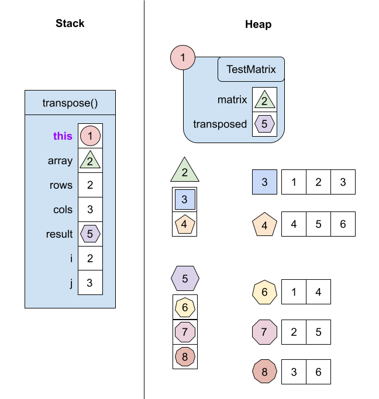

14.7 — Memory Models for Methods and Arrays
Let's take a look at what a memory model would look like for methods and arrays.
class TestMatrix {
int[][] transpose(int[][] array) {
int rows = array.length;
int cols = array[0].length;
int[][] result = new int[cols][rows];
for (int i = 0; i < rows; i++) {
for (int j = 0; j < cols; j++) {
result[j][i] = array[i][j];
}
}
return result;
}
int[][] matrix = {{1, 2, 3},
{4, 5, 6}};
int[][] transposed = this.transpose(matrix);
}If we were to run this code with the tester library, we would get the memory model below.
- When we initialize
matrix, we first create an array of length 2, then we create two arrays of length 3 which containintvalues. The addresses of these two length 3 arrays are stored as elements of the length 2 array. - When we call
transpose(), we implicitly (meaning secretly) pass in a reference to the calling object as a hidden parameter calledthis. In this case, the the calling object is theTestMatrixobject. - Similar to
matrix, when we initializeresult, we first create an array of length 3, then we create three arrays of length 2 which containintvalues. The addresses of these three length 2 arrays are stored as elements of the length 3 array. - As we iterate through the for loop, the values of
iandjchange. At the end of the for loop,i = 2andj = 3, since these are the conditions to end the for loops. The memory model of the stack here shows the state of the method stack frame right before it returns.- When we return from the method call, the method stack frame is actually completely deleted. For the memory model though, we want to draw what it looks like right before it is deleted, just so we have something to show.
